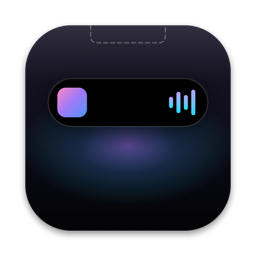
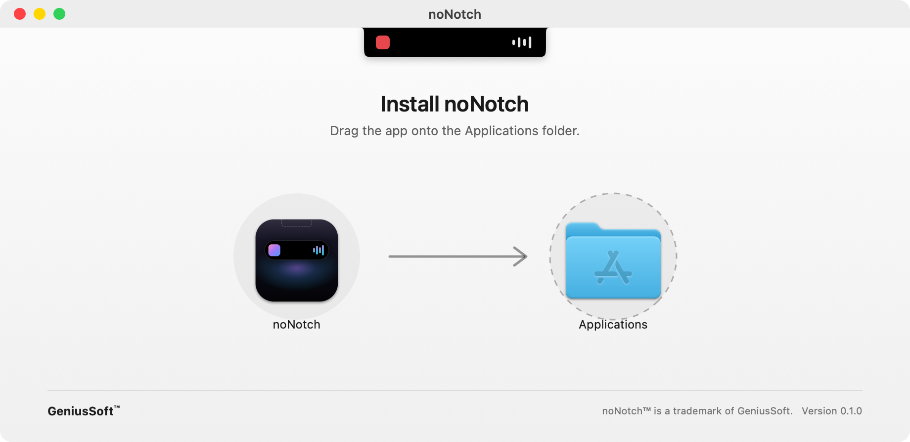

Now Playing, music and video
Spotify, Apple Music, YouTube, Netflix, VLC, IINA. Artwork, scrubbing, AirPlay and ±15 s skips for video. Live, time-synced lyrics glide by line by line.

noNotch DownloadFree for macOS
noNotch turns the cut-out at the top of your MacBook into a living Dynamic Island. Music, notifications, live activities and quick controls appear exactly where your eyes already are.
macOS 14 Sonoma or later · Apple Silicon & Intel · Works on any display
Hover the island · it cycles on its own too
Everything, one glance away
Spotify, Apple Music, YouTube, Netflix, VLC, IINA. Artwork, scrubbing, AirPlay and ±15 s skips for video. Live, time-synced lyrics glide by line by line.
Messages, Slack and Mail banners grow out of the island, iOS-style, with a history one click away.
Charging, AirPods, downloads, meetings, focus timers and eye-break reminders, all compact beside the notch.
Volume and brightness slide into the notch instead of the old square in the middle of your screen.
Wi‑Fi, Bluetooth, Focus, Dark Mode, Keep Awake, sliders, screenshot, lock and a camera mirror.
Drop files on the notch to hold them, drag them out anywhere or AirDrop them. Recent copies are kept too.
Your next meeting with a Join button, a month grid, and local weather at a glance.
Jot something down without leaving what you're doing. Saved as you type.
The open island is real Apple Liquid Glass that bends whatever is behind it, with glass controls that merge when pressed. Springs feel like iPhone, and everything runs on the GPU, so noNotch idles at 0% CPU.
No notch? No problem.
On external monitors and older Macs, noNotch hangs a tiny cord from the top of the screen. It sways when you get close. Give it a tug and the island drops down.
Drag it down
Private by design
No sign-up, no tracking, no analytics.
Notifications, clipboard and notes never leave your Mac.
Every permission is explained on first launch. Skip any you don't want.
A 2.7 MB download that idles at about 0% CPU.
Free. Version 0.1.0 · 2.7 MB · macOS 14 or later · Apple Silicon & Intel.

noNotch-0.1.0.dmg.First launch: if macOS says it can't verify the developer, right-click noNotch in Applications and choose Open.
Yes. On external displays and Macs without a notch, noNotch uses a pull-cord at the top of the screen, and shows a floating island when there's something to show.
Anything that reports to macOS Now Playing: Apple Music, Spotify, Podcasts, YouTube and Netflix in Safari, Chrome, Arc, Brave or Firefox, plus VLC, IINA and QuickTime.
To show volume and brightness in the notch instead of the system HUD, and to mirror notification banners. noNotch only reads what's on screen in those banners; nothing is sent anywhere.
No. Animations run on the GPU and services are event-driven, so noNotch sits at about 0% CPU when idle.
Use the menu-bar icon → Quit. To uninstall, drag noNotch from Applications to the Trash.